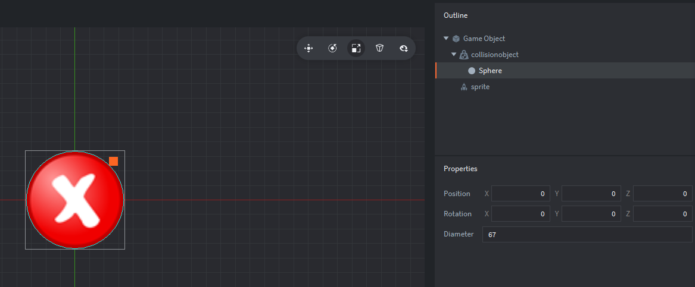

Tutorials for 2D games projects
Spotter | Creating a player target object and spawner.
When the player clicks on the picture, an object will be spawned at that location. By default it will be a picture of a cross to indicate the player was incorrect. If that object causes a collision with a difference object, it will change the picture shown to a tick. To spawn objects at run-time we need a factory, but first we need to create the object to be spawned. This will be known as the "target".
- In the assets panel, right click 'main' and select, 'New...', 'Game Object'.
- Give it the name, 'target' and click, 'Create Game Object'.
We are not creating this object in a collection because it doesn't belong to any particular level, we want to be able to spawn these objects on any level. Thinking ahead here allows us to create a reusable program component.
- In the outline panel, right click, 'Game Object' and select, 'Add Component', 'Sprite'.
- In the properties panel, change the 'Image' property to be, '/main/graphics.atlas'.
- In the properties panel, change the 'Default Animation' property to, 'cross'.
Remember you can press F to zoom out. - In the outline panel, right click, 'Game Object' and select, 'Add Component', 'Collision Object'.
- In the properties panel change the 'Type' property to 'Kinematic'.
- In the outline panel, right click, 'collisionobject' and select, 'Add Shape, 'Sphere'.
- In the editor panel, use the object controls to move and size the sphere to match the size and shape of the red circle.
The diameter property will be about 67.
When you have finished your editor and outline panel should look like this:

We now need a factory to spawn our target.
- In the assets panel, right click the 'main' folder and select, 'New...', 'Factory'.
- Name the factory, 'target' and click, 'Create Factory'.
Again, thinking ahead, we are creating this factory outside of the collections so that we can easily use it in all the level collections.
- In the properties panel, set the 'Prototype' property to, '/main/target.go'.
- Save the changes by pressing CTRL-S or 'File', 'Save All'.
The next stage is to write the script that will cause the target to change to a tick if it is spawned on top of a difference. Stage 4b >
 Craig'n'Dave | Version 1.3
Craig'n'Dave | Version 1.3